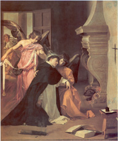
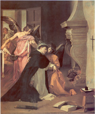

|  |
|---|
Textum a J. A. Endres in «Historisches Jahrbuch» 1908 editum
recognovit Enrique Alarcón et instruxit
recognovit Enrique Alarcón et instruxit

|  |
|---|

[EB1] Bernardus Guidonis, Epilogus brevis Sanctus Thomas de Aquino, ordinis Predicatorum, doctor egregius, matri sue domine Theodore per sanctum eremitam nomine Bonum prenuntiatus fuit et significatus ex nomine nasciturus magnusque vita fama et scientia in orbe futurus, natusque homo fuit in mundum anno Domini MºCCºXXVº. Hic puer completo etatis sue primo quinquennio missus fuit a parentibus ad monasterium Montis Cassini, initiandus inprimis litterarum elementis et moribus imbuendus anno Domini MºCCºXXXº paulo plus minusve. Hic etiam puer adhuc quasi septennis vel octennis de monasterio Montis Cassini missus fuit a parentibus Neapolim ad studium liberalibus artibus imbuendus anno Domini MºCCºXXXIIº paulo plus minusve. Hic quoque exacto quasi septennio in Neapolitano studio in grammaticalibus et logicalibus ac naturali philosophia cum mirabili docilitate naturalis ingenii et perspicacitate intelligencie clarioris apud Neapolim �nfra annos plures pubertatis existens, vero electus a Domino vocante se Deo, intravit ordinem fratrum Predicatorum etatis sue anno circiter XIVº, Dominice incarnationis MºCCºXLº paulo plus minusve. Hic etiam eodem anno, quo intravit ordinem, cum per fratres ordinis de Neapoli fuisset Romam perductus et a Roma per Tusciam Parisius duceretur, ut a suis elongaretur parentibus, raptus et captus fuit in itinere per germanos fratres suos carnales, et fratribus ordinis vi ablatus et missus ad matrem suam in castro montis s. Ioannis, ubi detentus et custoditus et clausus in carcere stetit quasi biennio in habitu ordinis, quem assumptum nunquam deseruit nec ad deserendum aliquatenus induci potuit vel inflecti, quamvis ob hoc graviter molestatus extiterit a suis et multipliciter infestatus. In custodia vero carceris deditus et intentus orationi et contemplationi ac studio s. Scripturarum tamquam in schola summi magistri veritatis et sciencie profecit mirabiliter in eadem. Hic vero iam adolescens elapso fere biennio de custodia carceris eductus est, inde per fenestram castri demissus et susceptus a fratribus ordinis preparatis ibidem ad hoc ipsum cum habitu ordinis et perductus Neapolim cum magna fratrum letitia anno etatis sue XVIº, Dominice vero incarnationis MºCCºXLIIº paulo plus minusve. Hic postquam redditus est ordini de custodia carceris parentum suorum totus deditus et intentus est studio tam philosophie quam sacre theologie. Annis circiter XI iam elapsis admirabilis in scientia factus est baccalareus in theologia Parisius etatis anno XXVIIº, Dominice vero incarnationis MºCCºLIIº paulo plus minusve. Hic quoque cum sententias sicut baccalareus laudabiliter valde perlegisset, assumptus ibidem ad magisterium sacre theologie etatis sue anno quasi XXXº inchoante sub anno Domini MºCCºLIVº. Vixit autem postquam ad magisterium theologie fuit assumptus annis XX. In quibus, quantum utilis ecclesie Dei et quam admirabilis fuerit eius scientia et doctrina, opera ipsius in tam brevi confecta tempore testimonium perhibent veritati. Hic vir perfectus, doctor egregius, florens scientia et doctrina propter eminentem eius scientiam per Gregorium papam vocatus veniens ad generale concilium, quod per eundem papam celebratum fuit apud Lugdunum in kalendis Maii anno Domini MºCCºLXXIVº superveniente corporis infirmitate in itinere prepeditus, obiit in monasterio Fossenove Cisterziensis ordinis, Taracinensis dioecesis nonis Martii etatis sue anno XLIXº terminante et anno quasi quinquagesimo inchoante, ab ingressu vero ordinis fratrum Predicatorum anno XXXVº vel XXXVIº, magisterii sui vero anno XXº. Hic tandem vir sanctus consummatus in gloria, fama sanctitatis eius redolente longe lateque diffusa et florente fructifera eius doctrina sequentibus signis et coruscantibus miraculis diligenti inquisitione premissa de sanctitate vite ac miraculorum virtute eiusdem comperta, fuit canonizatus et sanctorum confessorum catalogo annotatus cum solemnitate debita in huiusmodi consueta por dominum Ioannem papam XXII. apud Avinionem, ubi tunc cum curia sua residebat XVº kalendas Augusti, pontificatus sui anno XVIIº, Verbi autem incarnati anno MºCCCºXXIIIº, a felici vero transitu eius de hoc mundo anno quinquagesimo decurrente.